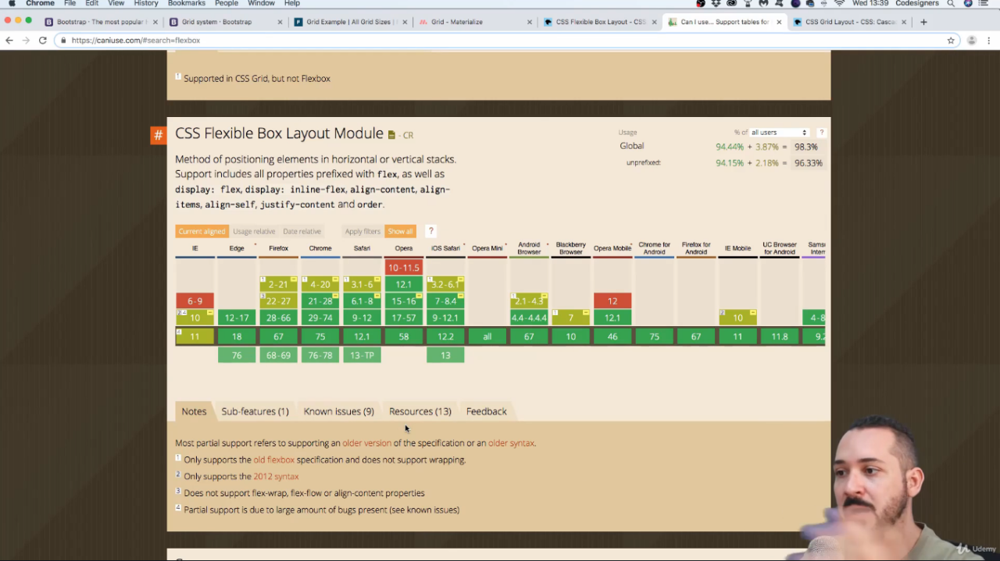

Professor mostrando como funciona o sistema de grid no desenvolvimento web, principalmente utilizando frameworks (bibliotecas) que nos auxiliam nessa parte e iremos utilizar o layout GRID da biblioteca BOOTSTRAP.
O professor mostrou os seguintes frameworks mais conhecidos no mercado:
O professor mostrou o site https://caniuse.com/ que mostra a compatibilidade de elementos nos navegadores mais antigos até aos mais atuais do mercado, no caso essa parte da figura mostra a compatibilidade com o elemento FLEXBOX nos navegadores atuais incluindo todas as versões lançadas.
Caso a pessoa queira ver quais as consequências do elemento utilizado, basta clicar na parte inferior chamada KNOW ISSUES e com detalhes irá mostrar o que poderá afetar utilizar o elemento em versões mais antigas nos navegadores e até mesmo em versões atuais.
